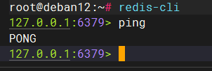
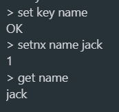
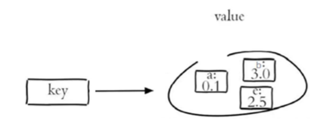
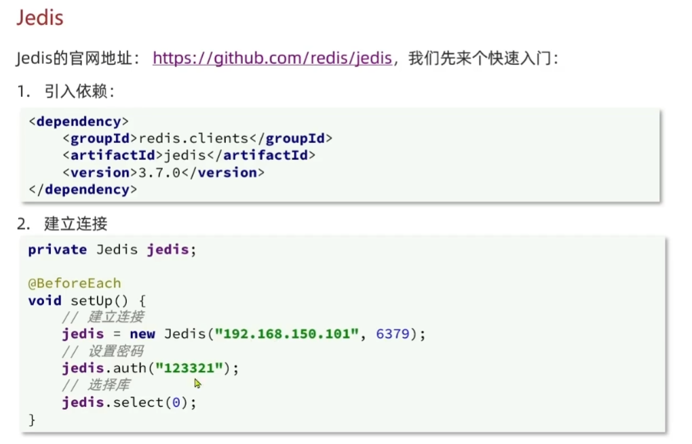
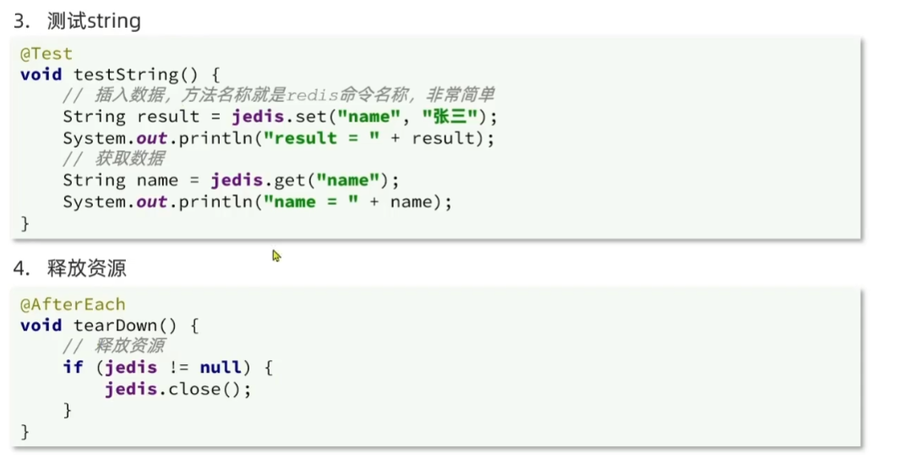
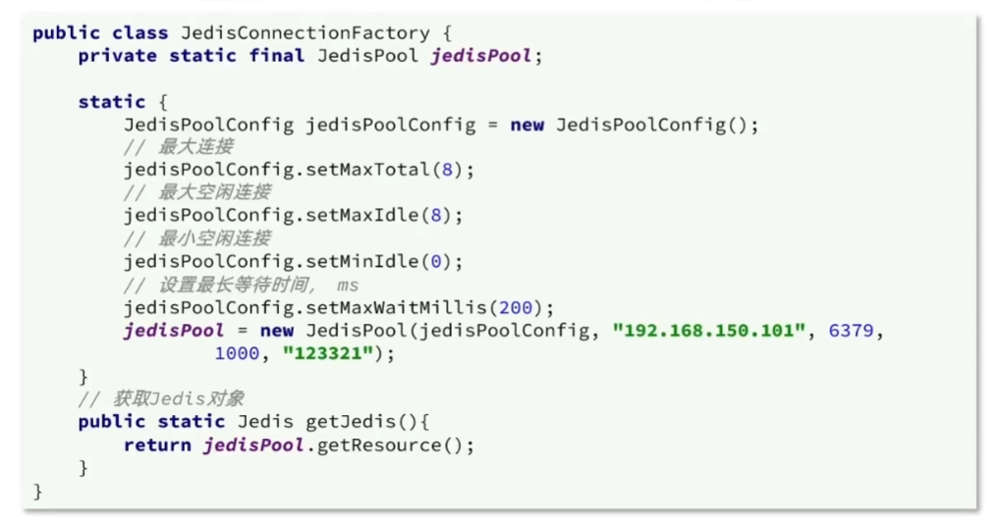
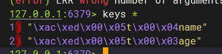
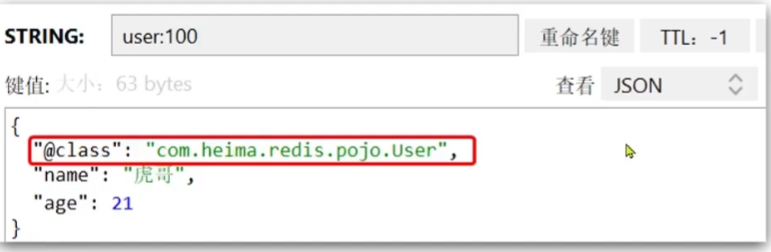
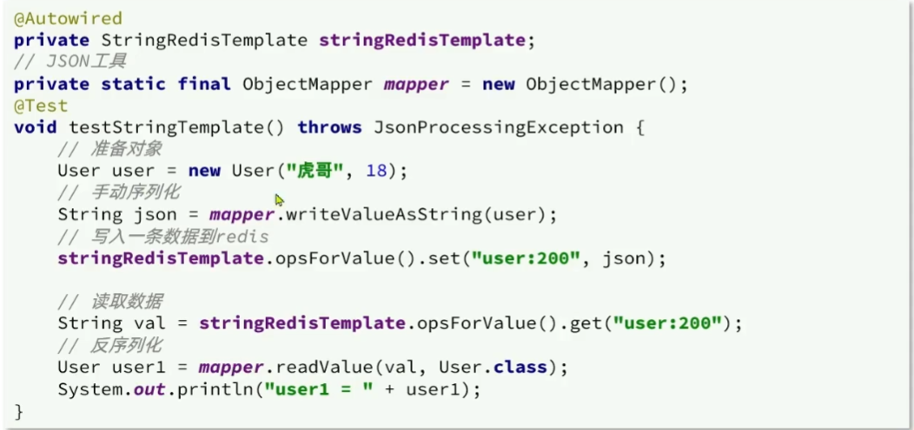

Redis教程文档
【黑马Redis快速入门，一套搞定Redis，常见数据结构及命令，包含jedis应用与优化、springdataRedis应用与优化】 https://www.bilibili.com/video/BV1rV411M7eU/?p=2&share_source=copy_web&vd_source=ea0cf64e8dac6f0193a7e28187a0fccb
快速入门
认识NoSql
| 关系型数据库 | 非关系型数据库 | |
|---|---|---|
| 数据结构 | 结构化 | 非结构化 |
| 数据关联 | 关系型 | 非关系型 |
| 查询方式 | sql查询 | 非sql查询 |
| 事务特性 | 满足ACID特性 | BASE |
| 存储方式 | 磁盘 | 内存 |
| 扩展性 | 垂直 | 水平 |
| 使用场景 | 数据结构固定 业务对数据安全性，一致性有较高的要求 | 数据结构不固定 对数据一致性，安全性要求不高 对性能有较高要求 |
认识Redis
REmote DIctionary Server(Redis) 是一个由 Salvatore Sanfilippo 写的 key-value 存储系统，是跨平台的非关系型数据库。
Redis 是一个开源的使用 ANSI C 语言编写、遵守 BSD 协议、支持网络、可基于内存、分布式、可选持久性的键值对(Key-Value)存储数据库，并提供多种语言的 API。
Redis 通常被称为数据结构服务器，因为值（value）可以是字符串(String)、哈希(Hash)、列表(list)、集合(sets)和有序集合(sorted sets)等类型。
特性：
键值（key-value）型，value支持多种不同数据结构，功能丰富
单线程，每个命令具备原子性
低延迟，速度快（基于内存、I0多路复用、良好的编码）。
支持数据持久化
支持主从集群，分片集群
支持多语言客户端
Redis安装
Redis - The Real-time Data Platform
教程基于Debain12进行部署
安装依赖
xxxxxxxxxxapt install tcl gcc -y安装redis程序
xxxxxxxxxxsudo apt-get install lsb-release curl gpgcurl -fsSL https://packages.redis.io/gpg | sudo gpg --dearmor -o /usr/share/keyrings/redis-archive-keyring.gpgsudo chmod 644 /usr/share/keyrings/redis-archive-keyring.gpgecho "deb [signed-by=/usr/share/keyrings/redis-archive-keyring.gpg] https://packages.redis.io/deb $(lsb_release -cs) main" | sudo tee /etc/apt/sources.list.d/redis.listsudo apt-get updatesudo apt-get install redis将安装最新版本的 Redis 开源，以及 redis-tools 包（redis-cli 等）。 如果需要安装早期版本，请运行以下命令以列出可用版本：
xxxxxxxxxxapt policy redisredis:Installed: (none)Candidate: 6:8.0.0-1rl1~bookworm1Version table:6:8.0.0-1rl1~bookworm1 500500 https://packages.redis.io/deb bookworm/main arm64 Packages500 https://packages.redis.io/deb bookworm/main all Packages6:7.4.3-1rl1~bookworm1 500500 https://packages.redis.io/deb bookworm/main arm64 Packages500 https://packages.redis.io/deb bookworm/main all Packages6:7.4.2-1rl1~bookworm1 500500 https://packages.redis.io/deb bookworm/main arm64 Packages500 https://packages.redis.io/deb bookworm/main all PackagesRedis 应该在初始安装后自动启动，并在启动时自动启动。 如果您的系统上不是这种情况，请运行以下命令：
xxxxxxxxxxsudo systemctl enable redis-serversudo systemctl start redis-server
访问Redis
Redis自带了指令客户端Redis-cil
xxxxxxxxxxredis-cil [potions] [commods]
potions常用参数
-h 127.0.0.1
-p 6379
-a pwd
commonds即redis操作指令
如ping等

图形化界面客户端
有很多开源免费的可视化客户端，如：Home - Redis Desktop Manager
Redis常见命令
数据结构介绍
Redis是一个key-value的数据库，key一般是String类型，不过value的类型多种多样
string（字符串）: 基本的数据存储单元，可以存储字符串、整数或者浮点数。
hash（哈希）:一个键值对集合，可以存储多个字段。
list（列表）:一个简单的列表，可以存储一系列的字符串元素。
set（集合）:一个无序集合，可以存储不重复的字符串元素。
zset(sorted set：有序集合): 类似于集合，但是每个元素都有一个分数（score）与之关联。
位图（Bitmaps）：基于字符串类型，可以对每个位进行操作。
超日志（HyperLogLogs）：用于基数统计，可以估算集合中的唯一元素数量。
地理空间（Geospatial）：用于存储地理位置信息。
发布/订阅（Pub/Sub）：一种消息通信模式，允许客户端订阅消息通道，并接收发布到该通道的消息。
流（Streams）：用于消息队列和日志存储，支持消息的持久化和时间排序。
模块（Modules）：Redis 支持动态加载模块，可以扩展 Redis 的功能。
通用命令
Redis通用命令是不分数据类型的，都可以使用的命令：
| 指令 | 描述 |
|---|---|
| keys pattern | 查找所有符合给定模式(pattern)的key（生产环境中不建议使用此操作进行模糊查找，查找时间过长，会阻塞主线程，导致服务不可用） |
| exists key | 检查给定key是否存在 |
| type key | 返回key所储存的值的类型 |
| del key | 该命令用于在key存在是删除key |
string字符串操作命令
| 语句 | 描述 |
|---|---|
| SET key value | 设置指定Key的值 |
| GET key | 获取指定Key的值 |
| SETEX key seconds value | 设置指定Key的值，并设置过期时间seconds秒 |
| SETEX key value | 只在key不存在时，设置key的值 |

hash哈希操作命令
Redishash是一个string类型的field和value的映射表，hash特别适合用于存储对象，常用命令：
| 指令 | 描述 |
|---|---|
| HSET key field value | 将哈希表key中的字段field的值设为value |
| HGET key field | 获取存储在哈希表中指定字段的值 |
| HDEL key field | 删除存储在哈希表中的指定字段 |
| HKEYS key | 获取哈希表中所有字段 |
| HVALS key | 获取哈希表中所有值 |

list列表操作命令
| 指令 | |
|---|---|
| LPUSH key value1 [value2] | 将一个或多个值插入到列表头部 |
| LRANGE key start stop | 获取列表指定范围内的元素 |
| RPOP key | 移除并获取列表的最后一个元素 |
| LLEN key | 获取列表长度 |

set集合操作命令
Redis set是string类型的无序集合。集合成员是唯一的，集合中不能出现重复的数据，常用命令：
| 指令 | 描述 |
|---|---|
| sadd key member1 [member2] | 向集合添加一个或多个成员 |
| smembers key | 返回集合中的所有成员 |
| scard key | 获取集合的成员数 |
| sinter key1 [key2] | 返回给定所有集合的交集 |
| sunion key1 [key2] | 返回所有给定集合的并集 |
| srem key member1 [member2] | 删除集合中一个或多个成员 |

sorted set有序集合操作命令
Redis有序集合是string类型元素的集合，且不允许有重复成员。每个元素都会关联一个double类型的分数。常用命令：
| 语法 | 描述 |
|---|---|
| zadd key score1 member1 [score2 member2] | 向有序集合添加一个或多个成员 |
| zrange key start stop [withscores] | 通过索引区间返回有序集合中指定区间内的成员 |
| zincrby key increment member | 有序集合中对指定成员的分数加上增量increment |
| zrem key member [member ] | 移除有序集合中的一个或多个成员 |

Redis的Java客户端
| 客户端 | 描述 | 官方推荐 |
|---|---|---|
| jedis | 以Redis命令作为方法名称，学习成本低，简单实用。但是Jedis实例是线程不安全的，多线程环境下需要基于连接池来使用 | ⭐ |
| lettuce | Lettuce是基于Netty实现的，支持同步、异步和响应式编程方式，并且是线程安全的。支持Redis的哨兵模式、集群模式和管道模式。 | ⭐ |
| Redisson | Redisson是一个基于Redis实现的分布式、可伸缩的Java数据结构集合。包含了诸如Map、Queue、Lock、Semaphore、AtomicLong等强大功能 | ⭐ |
| java-redis-client | ||
| vertx-redis-client |
Jedis使用


Jedis本身是线程不安全的，并且频繁的创建和销毁连接会有性能损耗，因此推荐使用Jedis连接池代替Jedis的直连方式

SpringDataRedis
介绍
SpringData是Spring中数据操作的模块，包含对各种数据库的集成，其中对Redis的集成模块就叫做SpringDataRedis。
提供了对不同Redis客户端的整合（Lettuce和Jedis）
提供了RedisTemplate统一APl来操作Redis
支持Redis的发布订阅模型
支持Redis哨兵和Redis集群
支持基于Lettuce的响应式编程
支持基于JDK、JSON、字符串、Spring对象的数据序列化及反序列化
支持基于Redis的JDKCollection实现
SpringDataRedis中提供了RedisTemplate工具类，其中封装了各种对Redis的操作。并且将不同数据类型的操作API封 装到了不同的类型中
使用
引入依赖
xxxxxxxxxxredis依赖<!-- https://mvnrepository.com/artifact/org.springframework.boot/spring-boot-starter-data-redis --><dependency><groupId>org.springframework.boot</groupId><artifactId>spring-boot-starter-data-redis</artifactId><version>3.5.3</version></dependency>连接池依赖<!-- https://mvnrepository.com/artifact/org.apache.commons/commons-pool2 --><dependency><groupId>org.apache.commons</groupId><artifactId>commons-pool2</artifactId><version>2.11.1</version></dependency>配置文件
xxxxxxxxxxspring:redis:host: localhostport: 6379password: 123456lettuce:pool:max-active:8 #最大连接数max-idle:8 #最大空闲连接min-idle:8 #最小空闲连接max-wait:1000 # 连接等待时间注入RedisTemplate
xxxxxxxxxx@Autowiredprivate RedisTemplate redisTemplate；编写测试
xxxxxxxxxxprivate RedisTemplate redisTemplate;void contextLoads() {redisTemplate.opsForValue().set("name", "zhangsan");redisTemplate.opsForValue().set("age", "18");System.out.println(redisTemplate.opsForValue().get("name"));System.out.println(redisTemplate.opsForValue().get("age"));}
序列化方式
RedisTemplate可以接收任意Object作为值写入Redis，只不过写入前会把object序列化为字节形式，默认是采用JDK序列化，得到的结果是这样的：

缺点：
可读性差
占用内存大
修改默认的序列化器
xxxxxxxxxxpackage com.example.demo.util;import org.springframework.context.annotation.Bean;import org.springframework.data.redis.connection.RedisConnectionFactory;import org.springframework.data.redis.core.RedisTemplate;import org.springframework.data.redis.serializer.GenericJackson2JsonRedisSerializer;import org.springframework.data.redis.serializer.RedisSerializer;import org.springframework.data.redis.serializer.StringRedisSerializer;public class redisTemplatejson {@Beanpublic RedisTemplate<String, Object> redisTemplate(RedisConnectionFactory factory) {// 创建templateRedisTemplate<String, Object> template = new RedisTemplate<>();// 设置连接工厂template.setConnectionFactory(factory);// 设置序列化工具GenericJackson2JsonRedisSerializer jackson2JsonRedisSerializer = new GenericJackson2JsonRedisSerializer();// key 和 hashkey使用string value hashvalue使用jsontemplate.setKeySerializer(RedisSerializer.string());template.setValueSerializer(jackson2JsonRedisSerializer);template.setHashKeySerializer(RedisSerializer.string());template.setHashValueSerializer(jackson2JsonRedisSerializer);return template;}}
扩展
xxxxxxxxxx// 这样也是完全可以的，功能相同template.setKeySerializer(RedisSerializer.string());template.setHashKeySerializer(new StringRedisSerializer());
| 特性 | RedisSerializer.string() | new StringRedisSerializer() |
|---|---|---|
| Spring 版本 | 2.0+ 推荐 | 所有版本 |
| 代码风格 | 函数式，更现代 | 传统 OOP |
| 性能 | 相同 | 相同 |
| 功能 | 相同 | 相同 |
| 推荐度 | ⭐⭐⭐⭐⭐ | ⭐⭐⭐⭐ |
❓ 常见问题
Q: 两种方式可以混用吗？ A: 完全可以，它们在功能上是等价的。
Q: 哪种性能更好？ A: 性能完全相同，只是语法糖的区别。
Q: 为什么要使用 RedisSerializer.string()？
A: 主要是代码风格更现代，与其他的 RedisSerializer.json() 等方法保持一致性。
✅ 结论
功能上：两种方式完全等效
选择上：新项目推荐使用
RedisSerializer.string()兼容性：现有代码可以继续使用
new StringRedisSerializer()
尽管JSON的序列化方式可以满足我们的需求，但依然存在一些问题，为了在反序列化时知道对象的类型，JSON序列化器会将类的class类型写入json结果中，存入Redis，会带来额外的内存开销。

为了节省内存空间，我们并不会使用JSON序列化器来处理value，而是统一使用String序列化器，要求只能存储String类型的key和value。当需要存储Java对象时，手动完成对象的序列化和反序列化。
Spring默认提供了一个StringRedisTemplate类，它的key和value的序列化方式默认就是String方式。省去了我们自定义RedisTemplate的过程：
